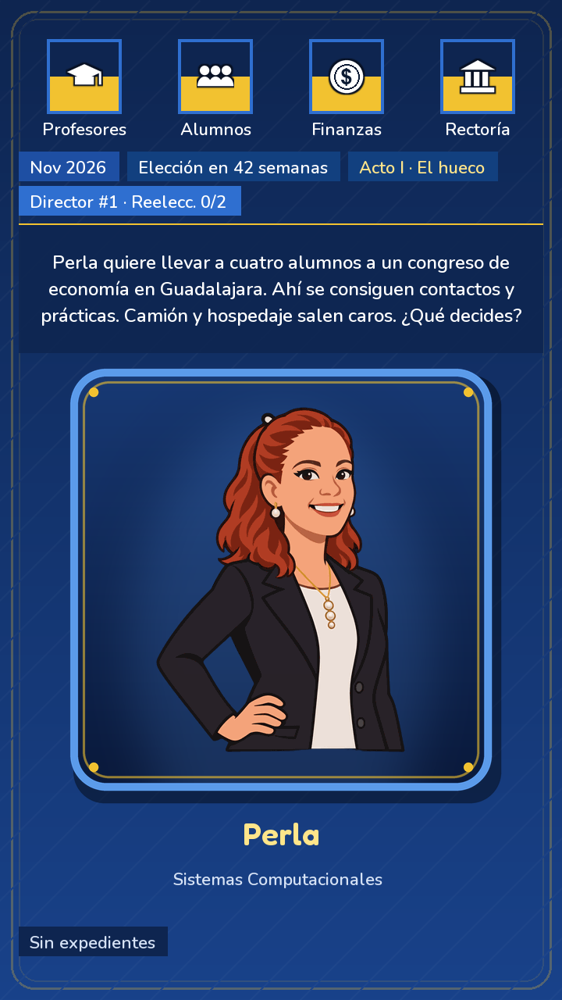

Un juego de cartas de decisiones: diriges una unidad académica y cada elección tiene un costo para profesores, alumnos, finanzas o rectoría.

Equipo: Fin de la Gestión, proyecto de la materia Diseño de Interfaces Basado en Estándares. Nosotros mismos pedimos, diseñamos y programamos el juego.
Un juego de cartas para el celular en el que diriges una escuela de la universidad. Cada carta es un problema de la semana: la deslizas a un lado o al otro para decidir, y tu decisión sube o baja cuatro barras (Profesores, Alumnos, Finanzas y Rectoría). Si una barra llega a 0 o a 100, pierdes el cargo y la historia sigue con quien te reemplaza.
Antes se llamaba «Director UAN: Economía». Hoy es una versión de prueba casi terminada (18 de noviembre), ya corregida con lo que vimos al revisarla y al probarla con estudiantes.
Un videojuego para aprender, de cartas y decisiones. Se juega con el celular en vertical y funciona en navegador, Android y computadora. Lo hacemos nosotros de principio a fin: diseño, programación y pruebas con jugadores.
Deslizas la carta. Pierdes el cargo si una barra llega a 0 o a 100.
Lo que descubresDarle siempre gusto al mismo grupo también te tumba: hay que equilibrar.
Lo que sientesTensión y humor: el juego se burla un poco de la política de la universidad.
Estos números salen de 15 000 partidas que la computadora jugó sola (el detalle está en la página 4). Con personas hicimos una prueba con 5 estudiantes y un cuestionario; falta anotar la calificación que le dieron y cuántos terminan la partida.
Sí. El más parecido es Reigns (Nerial, 2016). Revisamos tres juegos de este tipo:
| Juego | Qué hace | Qué hicimos con eso |
|---|---|---|
| Reigns | Decides deslizando cartas con dos opciones y cuidas cuatro barras. | Lo usamos igual. |
| Lapse: A Forgotten Future | La misma idea con otro tema. | Nos confirma que la idea funciona. |
| Sort the Court! | Se gana diciendo siempre que sí. | Lo evitamos. |
Sí, de tres maneras:
| Forma de jugar | Cuánto dura | Cómo le va |
|---|---|---|
| Sin pensar | 26 semanas | Casi siempre pierde el cargo porque una barra llega a 0 o a 100. |
| Solo lo que más sube | 15 semanas | Nunca llega a una votación. En 85 de cada 100 partidas pierde por llenar la barra de Alumnos. |
| Con cuidado | 116 semanas | Casi todos (99 %) llegan a su primera votación y ganan 9 de cada 10. Dura 4.5 veces más que quien juega sin pensar (en la primera versión: 2.8 veces). |
En pocas palabras: jugar bien sí se nota, pero las votaciones todavía son fáciles y quien juega sin pensar pierde más rápido de lo que queremos.
| Antes | Después | Para qué |
|---|---|---|
| Un punto avisa qué cambia, pero no hacia dónde. | Flecha verde si sube y roja si baja. | Que se vea lo que está pasando |
| Nombres confusos: Académico, Política. | Nombres de personas: Profesores, Alumnos, Rectoría. | Hablar como habla el jugador |
| Dibujo sin terminar. | Dibujo final, y se ve en qué parte de la historia vas. | Que no haya que acordarse de nada |
Estudiantes y maestros de universidad que juegan ratos cortos en el celular. Les gusta reconocer su universidad en el juego.
Lo que vimos en la prueba con 5 estudiantes de 20 a 25 años. Todavía no hay una encuesta más grande ni hemos probado con maestros, así que no sabemos si a ellos también les funciona.
Al final, sabe explicar por qué perdió el cargo y qué habría decidido distinto.
| Lo que necesita | Cómo lo resolvemos |
|---|---|
| Reconocer su universidad en el juego. | Los problemas, los personajes y las cuatro barras (Profesores, Alumnos, Finanzas, Rectoría) salen de la vida en la universidad. |
| Partidas cortas que quepan en un rato libre. | Una carta es una decisión. El juego se guarda solo en cada carta y con «Continuar» sigues donde te quedaste. |
| Saber qué va a pasar antes de decidir. | En nivel Fácil hay flechas (verde sube, roja baja) y un «?» si depende de la suerte. La barra se pone roja cuando está en peligro. |
| Aprender sin sentir que presenta un examen. | No hay preguntas ni calificación: al perder, un texto final explica por qué, y la historia sigue con quien te reemplaza. |
Sí, todo está listo y ya dentro del juego:
La historia tiene 3 partes y 6 finales posibles. Hay música para la oficina, la campaña y el final, y sonidos al mover la carta, al decidir y cuando hay peligro.
Nosotros mismos. Hicimos un programa para agregar y corregir cartas sin tocar la programación del juego. Otro programa revisa solo que no haya cartas con errores ni textos que no quepan.
Sí: los dibujos de personajes, los fondos y las capturas de pantalla están en buena calidad. Los dibujos de prueba de la primera versión ya se cambiaron; falta terminar una parte de los dibujos finales.
Solo en español, que es el idioma de quienes lo van a jugar.
Sí. Usa azul, blanco y amarillo:
Fredoka en títulos y botones; Nunito en el texto de las cartas. Las dos letras se pueden usar gratis.
Se puede pausar la partida, y con «Continuar» sigues donde te quedaste.
Nosotros. El juego está hecho en GDevelop 5, un programa para crear videojuegos. También hicimos nuestros propios programas para armar el juego, revisar las cartas y jugar partidas automáticas. No dependemos de nadie de fuera.
JavaScript las reglas del juego
JSON el texto de las cartas y los personajes
PythonNode.js nuestros programas de apoyo
| Programa | Para qué sirve | En qué ayuda al jugador |
|---|---|---|
| Editor de cartas | Agregar y corregir cartas y personajes sin tocar la programación, viendo cómo van a quedar. | Podemos agregar cartas sin descomponer el juego. |
| Revisor de cartas | Encuentra cartas repetidas o con errores, imágenes o sonidos que faltan y textos demasiado largos. | Ningún texto se corta en pantalla. |
| Partidas automáticas | La computadora juega miles de partidas y nos dice cuánto duran, por qué se pierde y qué cartas tienen una opción que siempre conviene. | El juego no es ni muy fácil ni imposible. |
| Juego de prueba | Abre el juego en el navegador y lo actualiza solo cada vez que cambiamos algo. | Cada cambio se prueba al momento. |
Probar con personas cambió el juego: dejamos de suponer qué se entendía y empezamos a verlo.